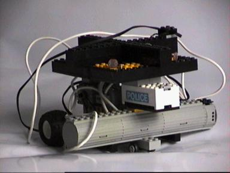
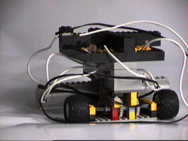
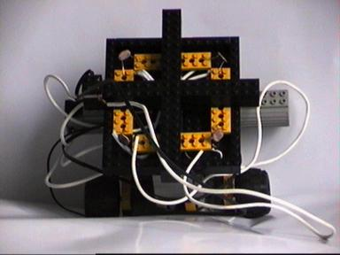

My first project concerning autonomous robots. I seem to have lost most information from before 2000, but suffice it to say, the robot was just a simple Braitenberg-vehicle (although we didn't know it was called that, when we build it), build with LEGO Robbert and I had laying around, and two LDR's.

It was build as a physics project in September 1999. I think we got a 7 or something (it had a major deviation to one side, don't remember what side, because the engines were different types).


This is the transcription (Dutch) of (a part of) the introductory text:
L.A.I.K.A.
totstandkoming & ontwikkeling
Inleiding
Wij hebben besloten een origineel practicum te doen. In tegenstelling tot de leerlingen die gekozen hebben voor het bepalen van grootheden of het controleren van formules, hebben wij gekozen voor een technisch ontwerp.
Dit omdat het ons, omdat het een uitdaging was, wel aansprak. Daartoe hebben wij een model ontworpen bestaande uit een schakeling en een door elektromotoren aangedreven voertuig, met de bedoeling zo een systeem samen te stellen met enige kunstmatige intelligentie.
Het niveau van intelligentie ligt echter nog zeer laag, op het niveau van een insect zoals bijvoorbeeld een mug of een mot. Ook ligt de vorm van intelligentie in eenzelfde gebied van semi-zintuigelijke, semi-intelligente handeling van het vliegen naar een lichtbron. Niet bepaald zoals zekere schaakcomputers met honderden processors en de hoogste mate van intelligentie zoals dat nu mogelijk is.
Met behulp van sensoren (weerstanden waarvan de weerstand afhankelijk is van de hoeveelheid licht die erop valt) Zorgen wij ervoor dat het model richting een lichtbron kan rijden.
Wij hebben het project L.A.I.K.A. gedoopt. L.A.I.K.A. staat voor: Low Artificial Intelligence Kart Advancement, oftewel de vooruitgang van een karretje met een lage hoeveelheid kunstmatige intelligentie. De naam Laika zelf, waarvan L.A.I.K.A. natuurlijk
is afgeleid, is afkomstig van het eerste levende wezen in de ruimte, de Russische hond
Laika. Wij vernoemden ons project hiernaar ter ere van wat volgens ons als één der belangrijkste gebeurtenissen van de afgelopen decennia te beschouwen is, de ‘space-race’, en diens oorzaak, de elektronische revolutie.